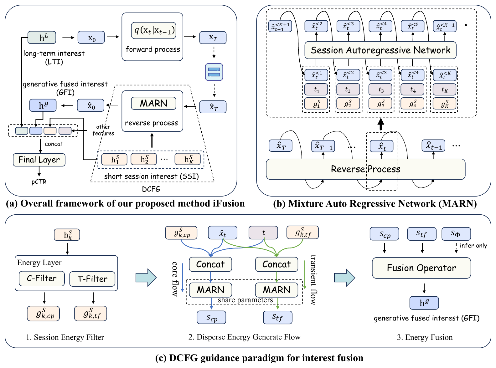
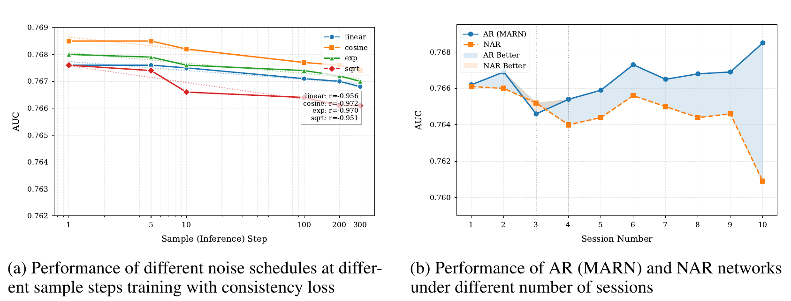
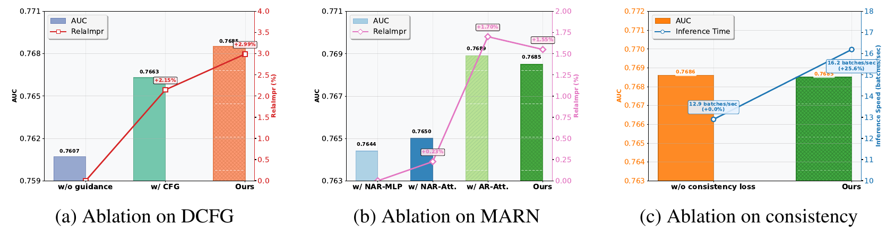

目录 · 9 节
1它到底在解决什么问题？2整体流程：把融合变成“改底稿”3稳定的一路和波动的一路：为什么要拆？4一段一段地改：为什么按会话顺序？5扩散模型上线太慢怎么办？6实验：效果到底好多少？7我认为它的局限8一个排序团队可以怎么试9一句话结论CTR 模型通常把用户行为切成两段：几个月的长期行为讲稳定偏好，最近几天的短期行为讲当下意图，各自编码后再拼接、加注意力或过门控合成一个向量。问题出在“合”这一步：短期行为里混着大促囤货、帮别人买东西这类一次性噪声，简单相加会把它们直接写进长期偏好。京东这篇 ICLR 2026 论文换了一个思路：把长期兴趣当作起点，先加噪，再用最近几段会话一步步“去噪”，生成融合后的兴趣向量。它把融合从一个固定公式变成一个以短期行为为条件的生成过程，稳定偏好和一时波动分两路引导，各自给不同的权重。工业数据集上 AUC 比最强基线 MTGR（美团的生成式排序模型）高 0.0037，线上 7 天 A/B 里 CTR 提升 2.44%，在线延迟只多了 0.3% 左右。
做排序、手里同时有长短期序列的团队值得读，但要带着问题读。它点中的问题是真的：长短期兴趣怎么合，大多数线上模型还停留在拼接或门控。最有用的部分不是“扩散”本身，而是两个具体设计：把短期信号拆成“稳定的一路”和“波动的一路”分开加权，以及按会话顺序一段段地把短期信号写进长期兴趣。核心思想一句话：长期兴趣是底稿，短期会话是修改意见，模型学的是“按这些意见改底稿”。
它到底在解决什么问题？
用一个电商广告的例子把问题演一遍（示意）。一个用户过去半年在京东主要点跑鞋和运动装备；最近四段会话分别是：大促里囤了一箱纸巾、帮朋友挑了婴儿奶粉、看了两双跑鞋、搜了一次登山包。
| 会话（示意） | 内容 | 对“跑鞋广告”的意义 |
|---|---|---|
| 会话 1 | 大促囤纸巾 | 一次性的，和兴趣无关 |
| 会话 2 | 帮朋友挑婴儿奶粉 | 一次性的，甚至会误导 |
| 会话 3 | 看了两双跑鞋 | 和长期偏好一致，说明当下真有需求 |
| 会话 4 | 搜登山包 | 新出现的兴趣，可能在扩展 |
线性融合会把四段会话的表示加权求和，再和长期兴趣拼起来。纸巾和奶粉占了一半会话，它们的影响就实打实地进了最终向量，接下来给这个用户推母婴广告的概率会被拉高。论文把现有做法的问题归成三条：
第一，长短期的特征空间对不上。线上受延迟限制，长期序列往往只存点击，短期序列却混着搜索、点击和购买。论文的工业数据就是这样：长期序列是 180 天的点击，短期序列是最近 60 天的搜索、点击和购买混在一起，再按平台预先定好的规则切成会话。两种来源的向量直接相加，默认它们在同一个空间里，这个前提本身就不成立。
第二，先各自建模、最后再合，合的那一步学不到两段序列之间的关系。
第三，短期行为里的噪声没有被单独处理，会顺着融合一路传到长期表示里。

整体流程：把融合变成“改底稿”
先看全景，再拆部件：
| 步骤 | 做什么 | 产出 |
|---|---|---|
| 编码 | 长期序列和每段短期会话各自用 Transformer 编码 | 一个长期兴趣向量，K 个会话兴趣向量 |
| 加噪 | 把长期兴趣当起点，按扩散模型的方式逐步加高斯噪声 | 带噪的长期兴趣 |
| 拆信号 | 每段会话拆成稳定一路和波动一路 | 两组引导信号 |
| 去噪 | 按会话顺序，用两组引导信号一段段去噪 | 融合后的兴趣向量 |
| 预测 | 融合兴趣和其他特征拼接，过最后的预测层 | pCTR |
关键分工在于：长期兴趣决定“这个人大体是谁”，短期会话决定“现在往哪个方向改”，而改多少由两路引导信号的权重控制。扩散模型本身大家都熟，这里要交代的是它的监督从哪来：融合兴趣并没有一个现成的“标准答案”，网络还原出的向量直接送进预测层，靠点击的交叉熵损失来学；另外有一项辅助损失要求它能预测下一段会话的兴趣（后面细讲）。所以“还原得好不好”是由“点击预测得准不准”来定义的。推理时不再加噪：按论文的推理算法，长期兴趣原样放在最高噪声那一档当作起点，跑一步或几步还原就得到结果。注意训练时输入带噪、推理时不带噪，两边的输入分布并不完全一样。下面拆开讲三个部件。
稳定的一路和波动的一路：为什么要拆？
论文把这个部件叫 DCFG（解耦的无分类器引导）。先说它改的对象：无分类器引导（classifier-free guidance，CFG）是图像生成里常用的技巧。训练时随机丢掉一部分条件，让同一个网络既会“有条件生成”也会“无条件生成”；推理时用无条件结果加上 γ 倍的“有条件减无条件”，γ 越大，结果越贴着条件走。
问题在于 CFG 只有一个 γ，对整段条件一视同仁。图像生成里，“画一只猫”这样的文本条件很干净；可用户的会话里，稳定偏好和一时冲动混在一起。γ 调大，大促囤货的噪声也被放大；γ 调小，真实的新兴趣又跟不上。
DCFG 的做法是把每段会话拆成两路信号，各配一个权重：
是不看会话时网络还原出的兴趣； 是稳定一路：先对会话里所有行为的表示取平均，再过一个 MLP。取平均会把只出现一次的行为摊薄，反复出现的部分留下来，作用类似低通滤波；论文说这一路的 MLP 用了更强的正则，但没有给出具体形式。 是波动一路：用注意力给会话里的行为分配权重，再过一个 MLP。注意力允许少数几条行为拿到很大的权重，一次突然的搜索不会像在平均里那样被摊平，作用类似高通滤波。训练时还加了一项损失，让两路信号的内积尽量小，逼它们各管各的。论文在验证集上测得两路引导方向的余弦相似度平均低于 0.102，说明它们确实基本分开了。
用一个维度手算一下（示意）。假设某一维代表“对运动品类的兴趣”，不看会话时还原出 0.30，只看稳定一路还原出 0.50，只看波动一路还原出 0.40。按论文找到的最好设置，稳定一路权重 2、波动一路权重 1：
稳定一路贡献 0.40，波动一路贡献 0.10。如果波动一路这段时间被纸巾和奶粉带偏，它的偏差也只按 1 倍计入，不会像单一 γ 那样和稳定信号一起被放大。论文在 25 组权重组合里搜索，稳定和波动的比例在 2 左右时效果最好。
一段一段地改：为什么按会话顺序？
第二个部件叫 MARN（混合自回归去噪网络）。常见做法是把 K 段会话的表示拼接或池化成一个条件向量，一次性喂给去噪网络，论文叫它非自回归（NAR）。MARN 换成按时间顺序处理：用第 1 段会话引导出一个中间结果，这个结果作为第 2 段会话的起点，再用第 2 段去引导，依次往下。
为什么要这样？打个比方，长期兴趣是一份底稿，每段会话是一条修改意见。一次性把四条意见合并成一条，“先帮朋友买奶粉、后来又看跑鞋”的先后关系就丢了；按顺序一条条改，后面的会话能修正前面的偏差，最近的意图也更容易留下来。训练时还有一个辅助任务：用前 K 段会话预测第 K+1 段会话的兴趣，用余弦距离计损失，逼模型学到兴趣是怎么一段段演化的。

图 4(b) 是这个设计最直接的证据。会话只有一两段时两种做法差不多；到 10 段会话时，一次性处理的 AUC 掉到 0.761 左右，按顺序处理还在 0.7685。这说明会话越多，先后顺序里的信息越多，一次性合并丢掉的也越多。
扩散模型上线太慢怎么办？
扩散模型的老问题是推理要跑很多步，CTR 模型每个请求要给成百上千个候选打分，跑 100 步是不现实的。论文加了一项一致性损失：随机取两个噪声强度，要求网络从这两种带噪输入还原出的结果尽量一致。这样网络就学会了“从哪个噪声程度出发都能直接还原到同一个答案”，整个反向过程只需要走 1 步。这 1 步里 MARN 仍然按顺序把 K 段会话依次过一遍，所以省掉的是扩散的迭代次数，会话之间的先后处理还在。
图 4(a) 显示，加了一致性损失后，四种噪声调度都是推理步数越多 AUC 越低，论文的解释是多步迭代会累积误差，所以最后选了 cosine 调度（加噪强度沿余弦曲线随步数增加，前几步加得慢、后几步加得快）加 1 步推理。消融里加不加一致性损失 AUC 几乎一样，推理速度却快了约 25%，说明这项损失省下的是算力，没有牺牲效果。
实验：效果到底好多少？
实验用了三个公开数据集和一个工业数据集。Amazon Books 取最近 10 条行为当短期、之前 90 条当长期；Taobao 故意把点击、购买、加购、喜欢都放进短期序列，用来检验“特征空间对不上”这个问题；Ali Ads 是阿里的展示广告数据；工业数据是一个大型广告平台 32 天约 100 亿条点击日志训练、第二天 50 万条测试。对比的基线覆盖三类：DIN、DIEN 这类经典序列模型；SIM、ETA、TWIN 系列这类长序列检索模型；MTGR；还有 DiffuRec、DreamRec、DiffuMIN 三个基于扩散的推荐方法。
| 方法 | Amazon AUC | Taobao AUC | Ali Ads AUC | 工业 AUC |
|---|---|---|---|---|
| DIN | 0.8162 | 0.8995 | 0.6422 | 0.7564 |
| TWIN-V2 | 0.8433 | 0.9289 | 0.6607 | 0.7634 |
| MTGR | 0.8440 | 0.9296 | 0.6615 | 0.7648 |
| DiffuMIN | 0.8427 | 0.9288 | 0.6595 | 0.7623 |
| iFusion | 0.8512 | 0.9347 | 0.6652 | 0.7685 |
四个数据集上 iFusion 都是第一，比 MTGR 高 0.0037 到 0.0072。更值得看的是另外三个扩散方法：它们在四个数据集上都不如 MTGR，有的还不如 TWIN-V2。这说明“用扩散模型”本身并不带来收益，收益来自 iFusion 怎么用条件去引导。

消融把这一点说得更清楚。不加任何引导、只做扩散时，工业 AUC 只有 0.7607，比 MTGR 的 0.7648 还低。加上标准 CFG 到 0.7663，换成两路引导到 0.7685。也就是说，相对 MTGR 的全部提升都来自引导方式，标准 CFG 到 DCFG 这一步贡献了 0.0022。按会话顺序处理比一次性处理高约 0.0035，而把 MARN 内部换成更大的注意力网络几乎没有额外收益，说明有用的是“按顺序”这个结构，不是网络容量。
论文还做了两个稳健性检查。把融合模块接到 DeepFM、DCN、AutoInt 三种预测层上，相对 MTGR 都有约 0.004 的提升；把长短期编码器换成最简单的平均池化，iFusion 仍然带来 0.0037。这说明这个融合模块可以单独拿出来，接到现有模型上。
上线成本很低：线上 TP99（99 分位）延迟只多 0.3%，训练时间和显存几乎不变，因为推理只跑 1 步，多出来的只是一个小网络的前向计算。线上 7 天 A/B 覆盖上亿用户，CTR 提升 2.44%，eCPM 提升 2.61%，说明离线的提升在真实流量里也站得住。
我认为它的局限
第一，“扩散”在最终形态里只剩一步。推理只跑 1 步、步数越多效果越差，而且不加引导时扩散骨架本身比 MTGR 低 0.0041。所以更准确的理解是：它学到的是一个以会话为条件、从带噪长期兴趣直接映射到融合兴趣的函数，扩散训练方式起到的更像是一种正则。要分清扩散本身贡献多少，需要一个对照：不用扩散、但同样有两路引导、按会话顺序处理的确定性网络。现有消融里还没有这一组。
第二，离线提升相对噪声不算大，报告也有瑕疵。工业测试集只有一天 50 万条，三次运行的标准差约 0.001，相对 MTGR 的提升只有它的 3 倍多，换一天数据结论是否稳定并不确定。附录的多轮训练表里，MTGR 第 3 轮的 AUC 比第 1 轮还高，和正文“所有模型第 1 轮最好”的说法矛盾，很可能是笔误，但会让人对数字的仔细程度打个问号。
第三，线上和离线的落差没有解释。离线 AUC 只多 0.0037，线上 CTR 却多 2.44%，线上对照组如果不是 MTGR 这样的强基线，这个落差就说得通；而线上也没有消融，分不清 2.44% 里哪个部件贡献最多。理论部分用了热力学和能量函数的类比，但真正实现就是“平均池化一路、注意力一路、加一个正交损失”，读的时候不必被定理吓住，也不要把定理当作效果的证据。
一个排序团队可以怎么试
- 先确认长短期融合确实是短板：把现有模型的融合方式换成最简单的拼接，看 AUC 掉多少。掉得很少，说明融合不是瓶颈，这篇的收益也有限。
- 从最便宜的部件开始：不上扩散，先把短期会话拆成平均池化一路和注意力一路，各配一个可调权重，加正交损失，看能否比单一融合高。这一步基本对应论文里 CFG 到 DCFG 的那 0.0022。
- 有效再试按会话顺序融合。会话数多的业务（比如用户一天多次打开的电商 App）收益会更大，会话很少的业务可以跳过。
- 最后再加扩散训练和一致性损失，固定 1 步推理，对比第 2、3 步的确定性版本。如果差别不大，就留在确定性版本，上线和维护都更简单。
一句话结论
长短期兴趣融合的关键，不在换成多复杂的生成模型，而在把短期信号里稳定的部分和一时的波动分开加权，并且按会话顺序逐段写进长期兴趣。
| 维度 | 评价 |
|---|---|
| 问题重要性 | 高。几乎所有有长短期序列的排序模型都要做融合，现有做法大多很粗 |
| 方法创新性 | 中高。两路引导和按会话顺序去噪是新的组合；扩散本身的必要性没被单独验证 |
| 实验证据 | 中。四个数据集加上亿用户的 A/B，但离线提升只有约 3 倍标准差，线上消融缺失 |
| 工程成本 | 低。一步推理，延迟多 0.3%，可以接到现有预测层上 |
| 是否值得尝试 | 值得试其中的两路引导和按会话顺序融合；扩散部分可以放到最后再验证 |
读完这篇，你觉得
夜读鸮记下了，谢谢你的反馈。
点一下即可，无需登录；再点一次撤回。只统计匿名次数，不记录你是谁。
讨论
欢迎补充实验细节、复现经验或不同看法。需 GitHub 登录。
正在加载讨论…